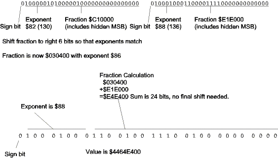

| Previous Section | Next Section | Index | Questions | Search the Text |
As we saw with scaled integer arithmetic, we can't add values unless their scale factors are the same. This means that to add two floating point values we must de-normalize the smaller value by shifting it to the right, incrementing its exponent, until the exponents match. At that point we can add the two values together. The sum may exceed 24 bits, so it may need to be shifted right, incrementing the exponent. Let's consider the case of adding 12.0625 to 903.5. The IEEE floating point representation of 12.0625 is $41410000 while that of 903.5 is $4461e000. Splitting into fields and performing the calculations:

If the two values differ in signs, then a subtraction must be performed. After shifting so that the exponents match, the value of smaller magnitude must be subtracted from the value of larger magnitude. The difference will need to be normalized. The process is somewhat more complicated than multiplication or division!
Let's look at the code. Like in the multiplication routine, we first check for addition of zero or NANs. In fact, we will use the same routines to handle return of the other addend (in case of addition of zero) or the NAN.
fpAdd: ; Add Two floating point values
leax 6,SP ; first value on stack
jsr fpSetCC ; see if zero or NAN
lbeq fpMul2AdjRet ; zero -- return other
lbvs fpMulAdjRet ; OV -- return this
leax 2,SP ; second value on stack
jsr fpSetCC ; see if zero or NAN
lbeq fpMulAdjRet ; zero -- return other
lbvs fpMul2AdjRet ; OV -- return this
Again we will reserve space for the two unpacked values, and do the unpacking.
leas -FPSIZE*2,SP ; Reserve space for two unpacked fp values
leay FPSIZE,SP ; Unpack values
jsr fpExtract
leax FPSIZE*2+6,SP
tfr SP Y
jsr fpExtract
If one exponent is smaller than the other, that value will need to be shifted until the exponents are the same. The same utility routine used in fpFix is used here to do the shifting.
ldaa FEXPO,SP ; Which exponent is smaller?
cmpa FEXPO+FPSIZE,SP
beq fpAddNoAdj ; same
blo fpAddAdj1 ; first is smaller
; second is smaller
leax FPSIZE,SP ; adjust exponent to match
jsr fpAdj
bra fpAddNoAdj
fpAddAdj1:
ldaa FEXPO+FPSIZE,SP ; adjust exponent to match
tfr SP X
jsr fpAdj
fpAddNoAdj: ; exponent in first value
staa FEXPO,SP
Now we compare signs to determine if we need to add or subtract.
ldaa FSIGN,SP ; add or really subtract?
eora FSIGN+FPSIZE,SP
bmi fpAddSubtract ; signs differ so subtract
Doing the addition is simple. We will add the low order 16 bits first, then the high order one byte at a time since there is no "add with carry accumulator D" instruction.
ldd FLOW,SP ; Add fractions
addd FLOW+FPSIZE,SP
std FLOW,SP
ldaa FHIGH+1,SP
adca FHIGH+1+FPSIZE,SP
staa FHIGH+1,SP
ldaa FHIGH,SP
adca FHIGH+FPSIZE,SP
staa FHIGH,SP
With the addition complete, we pack the result, move the return address to the right position on the stack, and return.
fpAddJoin:
tfr SP X ; now pack result
leay FPSIZE*2+6,SP
jsr fpPack
leas FPSIZE*2,SP ; remove local variables from stack
pulx ; get return address
leas 4,SP ; remove second fp argument
pshx ; push return address back on stack
rts ; and return
If we have to subtract rather than add, we want to subtract the value of smaller magnitude from that of the larger. Instead of comparing the two values, we will just do a subtract, and if we did it the wrong way then we only have to complement the result.
fpAddSubtract: ; Really do subtract
ldd FLOW,SP ; Subtract fractions
subd FLOW+FPSIZE,SP
std FLOW,SP
ldaa FHIGH+1,SP
sbca FHIGH+1+FPSIZE,SP
staa FHIGH+1,SP
ldaa FHIGH,SP
sbca FHIGH+FPSIZE,SP
staa FHIGH,SP
bge fpAddJoin ; sign is correct, so rejoin add code
ldd FHIGH,SP ; 2's complement value
ldx FLOW,SP
coma
comb
exg D X
coma
comb
addb #1
adca #0
std FLOW,SP
tfr X D
adcb #0
adca #0
std FHIGH,SP
ldaa FSIGN+FPSIZE,SP ; Use other sign
staa FSIGN,SP
bra fpAddJoin
If you really need subtraction, you can complement the sign bit of the value to subtract, and then add.
Continue with Floating Point Comparison and Section Conclusion.
Return to the Index.